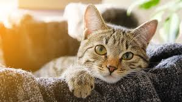

Welcome to the Cat World
Discover the amazing world of cats, their behaviors, and how to take care of them.
Graceful Companion
Cats are one of the most popular pets in the world, loved for their independence and charm. They come in many different breeds, sizes, and colors, each with its own unique personality. Unlike dogs, cats are often more self-sufficient and can entertain themselves for hours. They are skilled hunters, known for their sharp claws, quick reflexes, and ability to stalk prey silently. Many cats enjoy affection, purring when they are happy or comfortable around their owners. They also communicate through body language, like flicking their tails or twitching their ears. Cats have been companions to humans for thousands of years, even being worshipped in ancient cultures. Overall, cats are graceful, mysterious, and lovable animals that bring joy to millions of people.
The Playful Nature of Cats
Cats are naturally curious creatures who love to explore their surroundings. Play is an important part of their daily lives, helping them stay active and mentally sharp. Kittens especially are full of energy, often chasing toys, climbing, and pouncing on anything that moves. Even adult cats enjoy playful activities, whether it’s swatting at strings or hiding in boxes. Their playful behavior is not just for fun—it also mimics hunting skills they would need in the wild. Owners can strengthen their bond with their cats by engaging in games like fetch or using feather wands. This playtime provides both exercise and stress relief for cats. In the end, their playful spirit keeps them lively, entertaining, and endlessly amusing to watch.